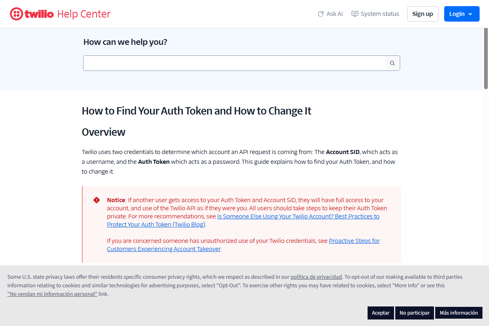

Conexión API para envío de recordatorios SMS y monitoreo de respuestas de clientes en EE.UU.
sincronizar_mensajes.py) detectará automáticamente cuando un cliente conteste tu SMS, avanzando la tarjeta en el Kanban a Respondió con la etiqueta 💬 SMS Twilio.
AC (ejemplo: ACxxxxxxxxxxxxxxxxxxxxxxxxxxxxxxxx). Copia este valor.
213 o 323 para Los Ángeles, 415 para San Francisco).+1XXXXXXXXXX (ejemplo: +12135550199).http://localhost:8765 y haz clic en la pestaña Configuración.ACxxxxxxxx...).+12135550199).| Campo en el Panel | Dónde obtenerlo en Twilio | Valor de Ejemplo / Formato |
|---|---|---|
| accountSid Account SID |
Twilio Console ➔ Dashboard ➔ Account Info | ACxxxxxxxxxxxxxxxxxxxxxxxxxxxxxxxxEmpieza siempre con "AC" seguido de 32 caracteres |
| authToken Auth Token |
Twilio Console ➔ Dashboard ➔ Account Info ➔ Show | [tu_auth_token_secreto_de_32_caracteres]Token secreto de 32 caracteres |
| fromNumber Número Remitente Twilio |
Phone Numbers ➔ Active Numbers | +12135550199Formato E.164 con código +1 |
/Messages.json de la API de Twilio buscando mensajes entrantes dirigidos a tu fromNumber y los registrará de forma inmediata en las notas del cliente.